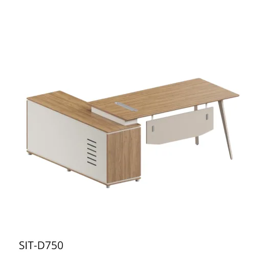
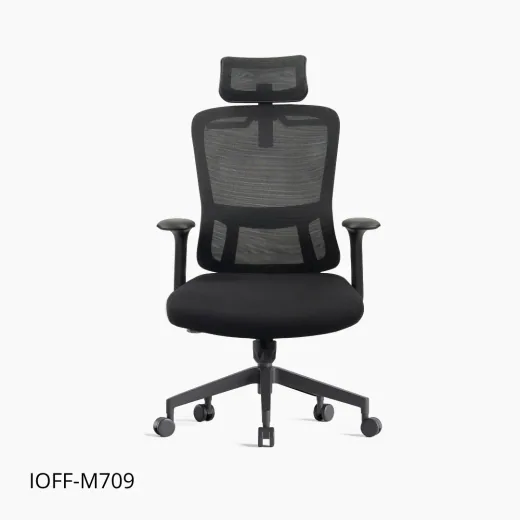

Sillas y escritorios · Modelo SITD750
Escritorio de oficina con extensión color sándalo dorado con gris tamaño 180W x 160R x 75H cm. SIT-D750.
L 13,884.18
En iOffice
Precio en cada tienda
| Tienda | Precio | Antes | Disponibilidad | |
|---|---|---|---|---|
| iOffice | L 13,884.18 | — | Disponible | Ver en tienda › |
Precios referenciales tomados de cada tienda el 28 de noviembre de 2026. El precio válido es el que muestra la tienda al comprar.
Historial de precio
Lo seguimos desde el 16 de noviembre. Precio más bajo registrado: L 13,884.18 en iOffice (16 de noviembre), igual que hoy. El precio no ha cambiado en ese tiempo.
Características
| Dimensiones | 180 cm |
|---|
Descripción
El Escritorio de Oficina con Extensión en Color Sandalo Dorado con Gris ofrece un espacio de trabajo amplio y elegante, ideal para organizar computadora, documentos y accesorios. Su diseño moderno combina estilo y funcionalidad, proporcionando comodidad y orden en tu oficina o home office.
Características
Extensión lateral que amplía el área de trabajo, ademas de contar con gaveta y compartimiento con puerta con cerradura, y espacios abiertos tipo repisa.
Incluye tomacorrientes integrado por debajo del escritorio.
Con panel de privacidad
Pasacables rectangular en el lateral del escritorio
Acabado en color Sandalo Dorado con Gris, elegante y moderno.
Estructura resistente y duradera para uso diario en oficina o home office.
Otros sillas y escritorios
 Silla ejecutiva respaldo alto, acabado en tela y malla negra, reposacabezas 2D, apoyabrazos · IOFF-M710L 2,599En iOffice
Silla ejecutiva respaldo alto, acabado en tela y malla negra, reposacabezas 2D, apoyabrazos · IOFF-M710L 2,599En iOffice
Silla ejecutiva respaldo alto, malla negra, reposacabezas ajustable, apoyabrazos fijos y base nylon · IOFF-M709L 1,823.9En iOffice Escritorio de oficina con extensión, con 3 cajones y columpio c/madera oscuro y gris de 200 x 160 x 76 cm. SIT-D650L 27,223.78En iOffice
Escritorio de oficina con extensión, con 3 cajones y columpio c/madera oscuro y gris de 200 x 160 x 76 cm. SIT-D650L 27,223.78En iOffice